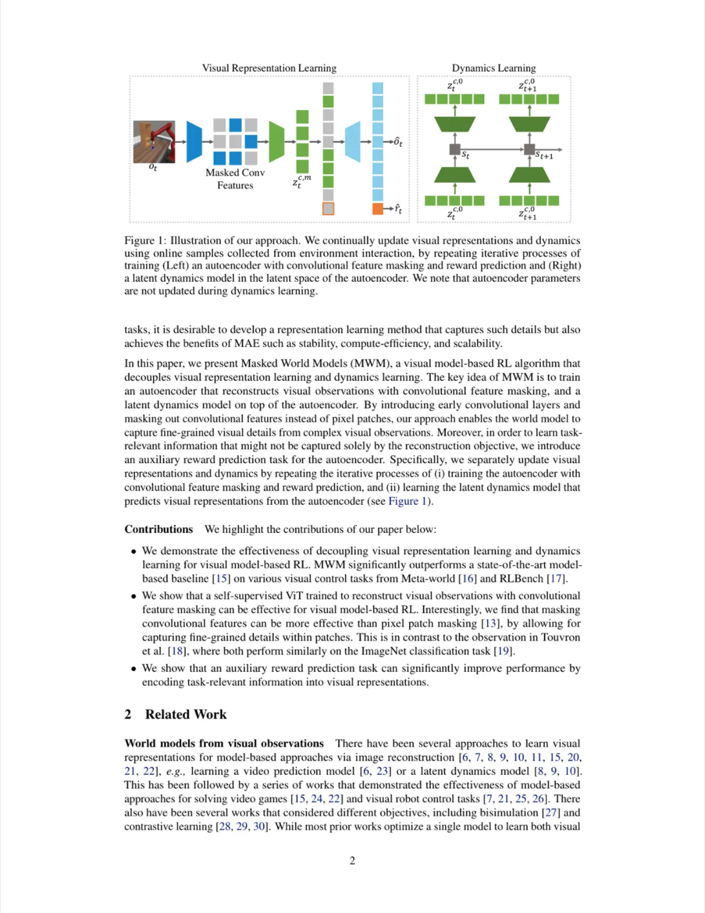
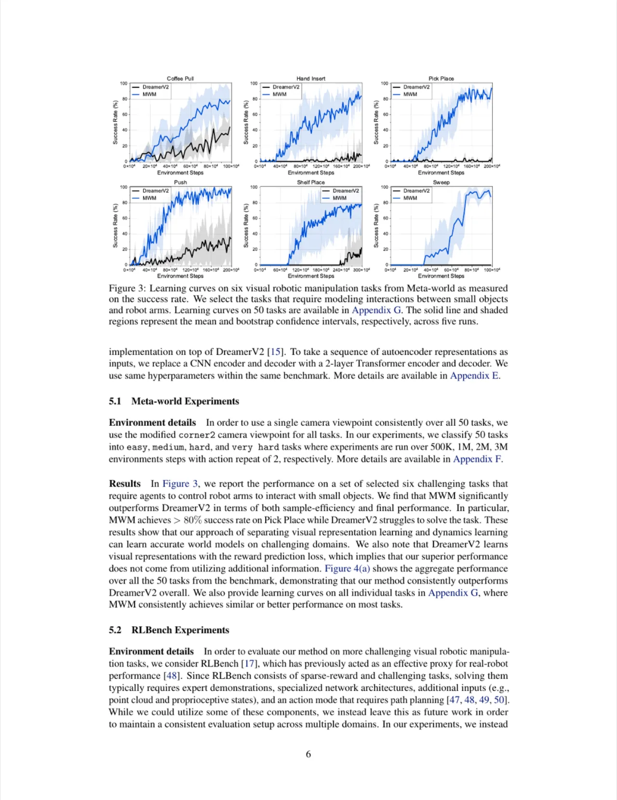
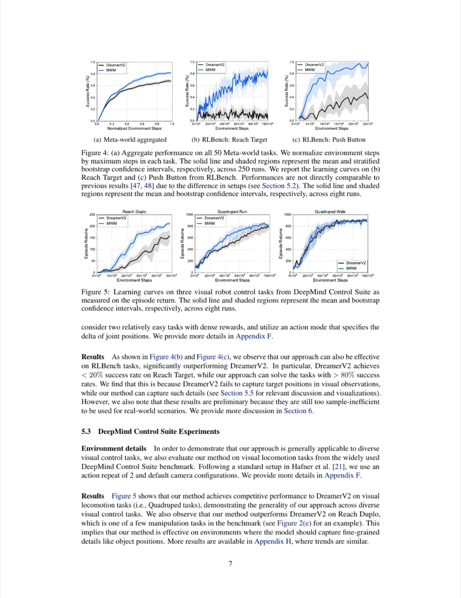
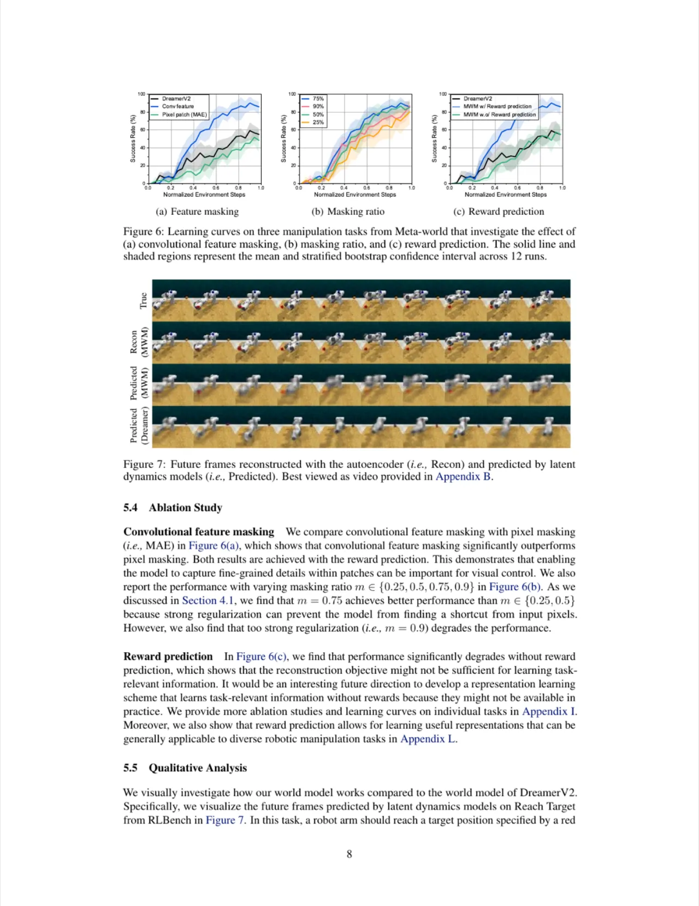

MWM（Masked World Models）是一种基于模型的视觉强化学习框架，核心思想是将视觉表征学习与动态学习解耦：先用带卷积特征掩码的自编码器（ViT + 辅助奖励预测）学习高质量表征，再在该表征空间上训练隐空间动态模型。这一设计使世界模型能够捕捉小物体等精细视觉细节，在 Meta-world 50 个任务上将成功率从基线的 67.9% 提升至 81.7%。
视觉模型强化学习（visual model-based RL）有潜力从视觉观测中实现高样本效率的机器人学习，但现有方法通常将视觉表征学习与动态建模端到端联合优化，难以准确建模机器人与小物体之间的交互。
"the current approaches typically train a single model end-to-end for learning both visual representations and dynamics, making it difficult to accurately model the interaction between robots and small objects."

端到端优化在表征质量与动态准确性之间存在内在权衡：世界模型需同时负责"看清画面"和"预测未来"，两者目标相互干扰。另一方面，类 MAE（masked autoencoder）的像素块掩码方式虽计算高效，但难以捕捉块内精细细节（如小目标位置），限制了其在视觉控制中的应用。MWM 正是为此而生。
MWM 将整个学习循环分为三个交替步骤：(i) 用卷积特征掩码 + 辅助奖励预测训练自编码器；(ii) 在自编码器冻结表征空间上训练隐动态模型；(iii) 与环境交互收集新样本。
与 MAE 的像素块掩码不同，MWM 先通过 convolution stem（3 层卷积 + 线性投影）将图像 ot 转换为卷积特征序列 hct，再以掩码比例 m = 75% 随机遮掩这些特征向量，送入 ViT encoder（4 层）和 ViT decoder（3 层）重建原始像素。 由于早期卷积层会在空间上混合低级细节，模型可以从相邻非遮掩特征中恢复块内所有细节——既保留了 MAE 的稳定性与计算效率，又弥补了其对精细细节捕捉不足的缺陷。
辅助奖励预测（Reward Prediction）：为将任务相关信息编码进表征，自编码器同时预测奖励 r̂t。具体做法是在 ViT decoder 输入中追加一个可学习 mask token，对应输出接线性头预测奖励。实验证明这一设计对最终性能至关重要（去掉后性能显著下降）。
视觉表征学习完成后，利用冻结的自编码器表征 zc,0t（无掩码编码结果）训练 RSSM 变体。与原始 DreamerV2 的区别在于：Representation Model 以 zc,0t 而非原始像素为输入，图像解码器替换为"视觉表征解码器"（重建表征而非像素）。这使动态模型可以专注于建模状态转移，而不必同时学习高维像素重建。
整体优化目标 Lmwm(φ, θ) 包含两项：
• 视觉表征学习：重建损失（MSE）+ 奖励预测损失
• 动态学习：表征重建损失 + 奖励损失 + KL 散度（RSSM）

在三个基准上评估 MWM：Meta-world（50 任务）、RLBench（2 任务）、DeepMind Control Suite（视觉运动控制）。视觉输入统一为 64×64×3 RGB 图像，基线为 DreamerV2。
| 基准 / 任务 | DreamerV2（基线） | MWM（本文） | 备注 |
|---|---|---|---|
| Meta-world 50 任务（成功率） | 67.9% | 81.7% | +13.8pp |
| RLBench: Reach Target | <20% | >80% | 显著差距 |
| RLBench: Push Button | 低 | 更高 | 定性优势 |
| DMControl: Reach Duplo | — | 优于基线 | 操纵任务 |
| DMControl: Quadruped Walk/Run | 相当 | 相当 | 运动任务持平 |

图 6（下图）系统分析了三个关键设计选择：

定性分析（Figure 7）揭示了解耦设计的工作机制：自编码器忠实重建所有细节（包括蓝、橙色干扰块），而动态模型的预测则选择性地只追踪任务相关组件（红色目标块），忽略无关细节。
"the performance of our approach heavily depends on the auxiliary reward prediction task. This might be because our autoencoder is not learning temporal information, which is crucial for learning task-relevant information." 如果奖励信号不可用（如无监督探索场景），当前框架将难以编码任务相关信息。
"our model operates only on RGB pixels from a single camera viewpoint"，尚未整合本体感受状态（proprioceptive states）、点云等其他模态输入，限制了在更复杂真实场景中的应用。
RLBench 实验结果"are preliminary because they are still too sample-inefficient to be used in real-world scenarios."未来方向包括：利用少量演示数据、引入带路径规划的动作模式、在视频数据集上预训练世界模型等。
自编码器在单帧图像上训练，不包含时序信息。作者指出探索视频 ViT 表征学习是值得研究的未来方向（inferred from design）。